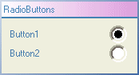

The RadioButton control displays the state of a Boolean (digital) channel and allows the channel state to be changed.
It also has the following features:
The KineticaRT Studio RadioButton should be connected to channels containing values of type KineticaRT.Values.Boolean.
Pressing a radio button will set the connected channel.
To clear a radio button, the channel it is connected to must be cleared. If the This can be done from a sequence.
An alternatively way to clear the RadioButtons is to use a ButtonInterlock component. This has a list of Buttons, Checkboxes, and / or RadioButtons and when any of those buttons is pressed, it releases all the others, the buttons will then clear their channels themselves.